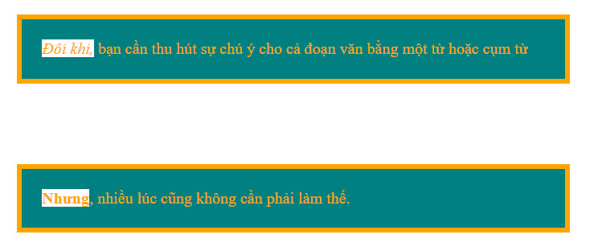

LÀM QUEN VỚI CSS
Hướng dẫn cơ bản để xây dựng giao diện đẹp hơn một chút
CSS (Cascading Style Sheets) là mã bạn sử dụng để tạo kiểu cho trang web của mình. CSS Cơ bản sẽ đưa bạn qua những gì bạn cần để bắt đầu. Chúng tôi sẽ trả lời các câu hỏi như: Làm cách nào để tạo văn bản màu đen hoặc đỏ? Làm cách nào để hiển thị nội dung của tôi ở một nơi như vậy trên màn hình? Làm cách nào để trang trí trang web của tôi với hình nền và màu sắc?
CSS thật sự là gì?
Trong phần trước chúng ta tập trung hoàn toàn vào HTML. Bây giờ, đã đến lúc làm cho mọi thứ trở nên đẹp hơn (sắp xếp) với Cascading Style Sheets (CSS). Bạn có thể nghĩ về CSS như định nghĩa thiết kế của người dùng trong một trang web. Nó xác định những thứ như kích thước phông chữ, lề và màu sắc bằng ngôn ngữ hoàn toàn tách biệt với HTML.
Tại sao nó là một ngôn ngữ riêng biệt? Vâng, nó phục vụ một mục đích hoàn toàn khác. HTML đại diện cho nội dung trang web của bạn, trong khi CSS xác định cách trình bày nội dung đó cho người dùng. Đây là một sự khác biệt cơ bản để phát triển web hiện đại.

Trong chương này, chúng ta sẽ khám phá cú pháp cơ bản của CSS, cũng như cách kết nối nó với các tài liệu HTML của chúng ta. Mục tiêu không phải là để trở thành một chuyên gia CSS hoặc ghi nhớ tất cả các kiểu có sẵn, mà là để hiểu cách CSS và HTML tương tác.
Thiết lập và định kiểu CSS
Đầu tiên, chúng ta tạo một tập tin mới với định dạng trong cùng thư mục với thư mục mà chúng ta đã tạo với phần trước.
Bây giờ, hãy thêm đoạn CSS sau vào tệp để xem nó có được kết nối đúng với trang HTML hay không
Trước khi áp dụng CSS, chúng ta luôn luôn xác định các phần tử HTML mà nó áp dụng. Trong trường hợp này, chúng ta đang cố gắng tạo kiểu cho phần tử . Sau khi chọn phần tử tác động, chúng ta sẽ khai báo các thuộc tính ở bên trong cặp dấu ngoặc nhọn. Bất kỳ thuộc tính nào mà chúng ta đặt ở đây sẽ ảnh hưởng đến phần tử này.
là một thuộc tính xác định màu văn bản của bất kỳ thành phần HTML nào đã được chọn. Nó chấp nhận một giá trị tên màu đại diện cho một màu. có nghĩa là màu cam.
Bây giờ, nếu bạn thử load lại trang HTML trong trình duyệt, bạn sẽ không thấy định kiểu trong CSS hoạt động. Đó là vởi vì chúng ta chưa liên kết chúng lại với nhau. Đây là những gì mà thẻ trong HTML cần phải thực hiện. Trong tệp , chúng ta cần thay đổi như sau:
Bây giờ, khi bạn load lại trang, bạn sẽ thấy màu cam ở nhiều nơi trên trang web.
-
Thêm nhiều giá trị thuộc tính
Trong mỗi bộ quy tắc, bạn phải sử dụng dấu chấm phẩy (;) để phân biệt cho mỗi bộ quy tắc khai báo kế tiếp như sau:
-
Các phần tử khác nhau
Bạn cũng có thể áp dụng các kiểu cho các yếu tố khác . Đối với điều đó, chỉ cần thêm nhiều quy tắc CSS với các bộ chọn khác nhau. Chúng ta có thể thay đổi kích thước và kiểu phông chữ của các thẻ tiêu đề của chúng ta như sau:
-
Chọn nhiều phần tử
Bạn cũng có thể chọn nhiều kiểu phần tử và áp dụng một quy tắc duy nhất được đặt cho tất cả các yếu tố đó. Bao gồm nhiều bộ chọn được phân biệt bởi dấu phẩy (,). Ví dụ:
Bây giờ trang web của bạn sẽ trông như sau:
-
Các loại bộ chọn
Tên bộ chọn Thành phần tác dụng Ví dụ Bộ chọn phần tử (đôi khi được gọi là thẻ hoặc loại bộ chọn) Tất cả (các) thành phần HTML của loại được chỉ định. p
ChọnBộ chọn ID Phần tử trên trang có ID được chỉ định. (Trên một trang HTML nhất định, bạn chỉ được phép một phần tử cho mỗi ID, và tất nhiên là mỗi ID cho mỗi phần tử). #my-id
Chọn hoặcBộ chọn Class (Các) Thành phần trên trang có lớp (class) được chỉ định (lớp có thể xuất hiện nhiều lần trên một trang). .my-class
Chọn vàBộ chọn thuộc tính (Các) thành phần trên trang có thuộc tính được chọn. img[src]
ChọnBộ chọn Pseudo-class (Các) thành phần được chỉ định, nhưng chỉ khi ở trạng thái được chỉ định, ví dụ: rê chuột a:hover
Chọn , nhưng chỉ khi con trỏ chuột đang di chuột qua liên kết.
Mô hình hộp CSS
Mô hình hộp CSS là một tập hợp các thuộc tính CSS nhằm xác định kích thước của mọi thành phần trong trang web. Nó cung cấp cho mỗi hộp bốn thuộc tính:
- Nội dung - Văn bản, hình ảnh hoặc nội dung phương tiện khác trong thành phần.
- Padding (vùng đệm) - Khoảng cách giữa nội dung và đường viền của nó (không gian xung quanh nội dung).
- Border (đường viền) - Đường giữa đệm và lề của hộp.
- Margin (lề) - Khoảng cách xung quanh bên ngoài của phần tử
-
Padding
Hãy bắt đầu từ trong ra ngoài. Chúng ta đã làm việc với nội dung ở trên, bây giờ hãy tìm hiểu cách định nghĩa padding cho các phần tử.
Sau khi thêm thuộc tính, bây giờ mỗi bên của thẻ sẽ thêm 20px. Bạn có thể để ý màu nền được mở rộng để lấp đầy khoảng không gian mở rộng này. Đây là trường hợp để padding vì nó ở bên trong đường viền.
Đôi khi bạn chỉ muộn tác động vào một mặt nào đó của phần tử. Do đó, CSS cung cấp các cách viết và thuộc tính như sau:
-
Border
Đây là một đường được vẽ xung quanh nội dung và phần đệm của một phần tử. Thuộc tính sẽ có một cú pháp mới để xác định. Đầu tiên, chúng ta xác định chiều rộng nét của đường viền, sau đó là kiểu của nó, tiếp theo là màu của nó.
Hãy thử thêm một đường viền xung quanh thẻ bằng cách cập nhật quy tắc trong style.css:
Điều này chỉ đơn giản là thiết lập một đường viền nét liền màu cam, rộng 5 điểm ảnh (px) trên tất cả các cạnh của body.
Cũng giống như , thuộc tính cũng có thể viết riêng cho từng mặt riêng biệt như sau:
-
Margin
Thuộc tính này xác định không gian bên ngoài đường viền của một phần tử. Hay nói đúng hơn là khoảng trống giữa một hộp và các hộp xung quanh nó. Chúng ta hãy thêm một số khoảng trống vào phần tử:
Và đây là điều chúng ta mong đợi:
CSS cũng cung cấp các cách viết và thuộc tính cho giống với thuộc tính .
-
Yếu tố khối và yếu tố nội tuyến
Với mỗi phần tử HTML được hiển thị trên màn hình là một hộp và chúng có hai loại: hộp cấp khối và hộp cấp tuyến. Chẳng hạn, là các phần tử mức khối, trong khi và là các phần tử nội tuyến. Hãy xem xét kỹ hơn các hộp bằng cách thêm mục sau style.css:
Sau khi thêm background-color cho phần tử phần tử lựa chọn, các đoạn văn của chúng ta có nền màu xanh, trong khi đó các yếu tố nhấn mạnh có nền màu trắng.
Những điều cần lưu ý với hộp và khối nội tuyến:
- Hộp khối luôn xuất hiện bên dưới phần tử khối trước đó.
- Các chiều rộng của hộp khối được thiết lập tự động dựa trên chiều rộng của thùng chứa mẹ. Trong trường hợp này, các khối luôn có chiều rộng của cửa sổ trình duyệt.
- Chiều cao mặc định của hộp khối dựa trên nội dung chứa trong đó.
- Hộp nội tuyến không ảnh hưởng đến khoảng cách dọc. Chúng không phải để xác định bố cục, chúng dành cho các kiểu dáng bên trong một khối.
- Độ rộng của hộp nội tuyến dựa trên nội dung mà nó chứa, không phải chiều rộng của phần tử cha.
Bây giờ, nếu chúng ta muốn tạo các khối và thay vì là các phần tử nội tuyến, chúng ta sử dụng thuộc tính của CSS như sau:
Bây giờ, các yếu tố này hoạt động giống như các tiêu đề và đoạn văn, chúng bắt đầu trên dòng riêng và chúng lấp đầy toàn bộ chiều rộng của trình duyệt.
Kết luận
Chúng ta sẽ tìm hiểu thêm về các ứng dụng thực tế của các thuộc tính và mô hình hộp CSS khi chúng ta tìm hiểu sâu hơn về việc xây dựng các trang web phức tạp. Hiện tại, hãy nghĩ về nó như một công cụ mới trong hộp công cụ CSS của bạn. Với một vài khái niệm chính cơ bản, bạn sẽ cảm thấy được trang bị nhiều hơn để chuyển đổi một mockup thiết kế thành một trang web thực tế.
Và nếu bạn đã làm theo tất cả các hướng dẫn trong bài viết này, bạn sẽ kết thúc với một trang trông giống như thế này:
See the Pen ExxGedd by Nguyễn Đình Huy (@huynd2609) on CodePen.